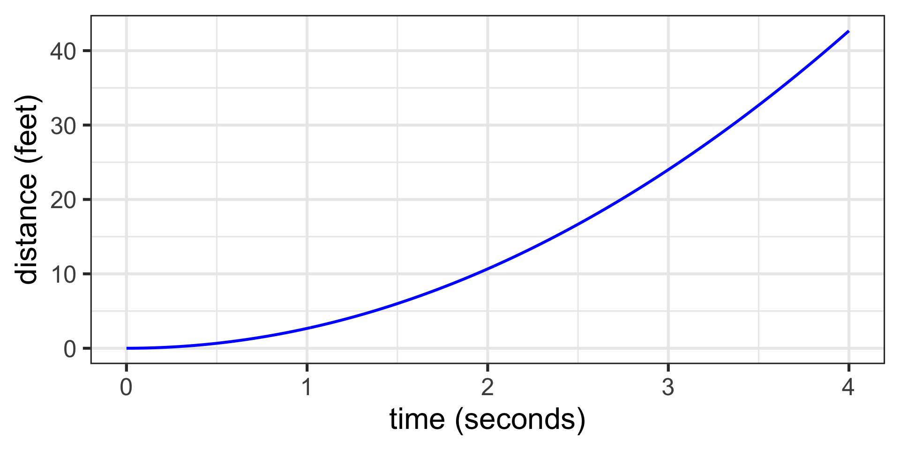
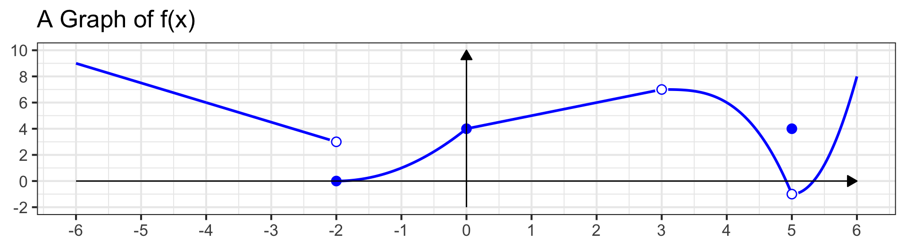
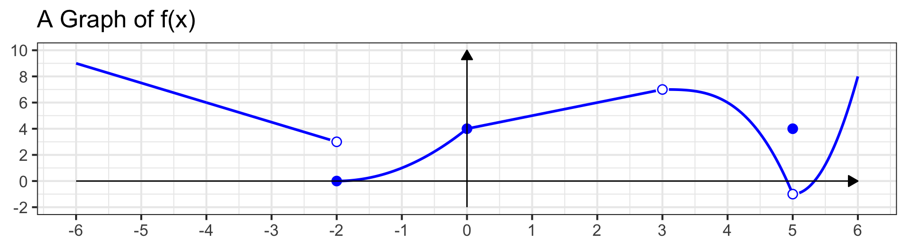
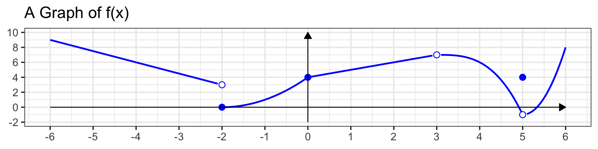
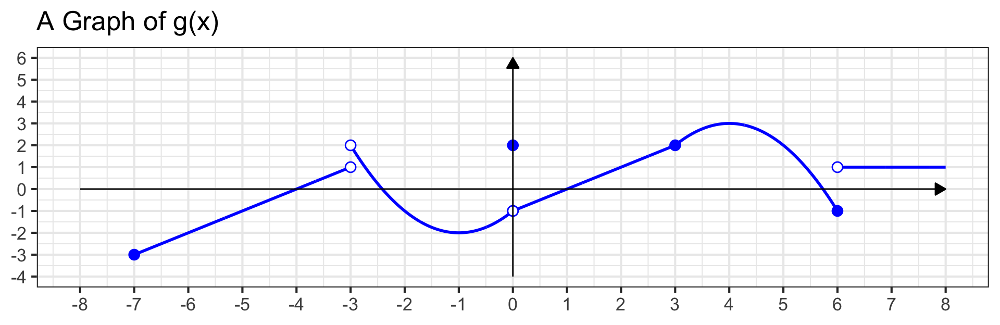

MAT 142: Limits and Rates of Change
June 2, 2026
Reminders
At our last meeting, we discussed each of the following:
- The domain of a function as the collection of all its permissible inputs.
- Domain restrictions resulting from denominators and even-index radicals.
- Determining a function’s domain algebraically.
- Identifying domain and range from a graph.
Try the following warm-up problems.
Problem 1: Write the domain of the function \(\displaystyle{f\left(x\right) = \frac{x^2 - 6x + 5}{x - 1}}\) using interval notation
Problem 3: Evaluate \(h\left(5\right)\) for \(\displaystyle{f\left(x\right) = \frac{x^2 - 6x + 5}{x - 1}}\)
Problem 5: Evaluate \(k\left(0\right)\) and \(k\left(2\right)\) for \(\displaystyle{k\left(x\right) = \frac{x^2 - 6x + 5}{x - 1}}\).
Can you approximate the rate of change of \(k\left(x\right)\) between \(x = 0\) and \(x = 2\)?
Problem 2: Write the domain of the function \(\displaystyle{g\left(x\right) = \frac{x}{\sqrt{\left(x^2 - 25\right)}}}\) using interval notation.
Problem 4: Evaluate \(f\left(1\right)\) for \(\displaystyle{j\left(x\right) = \frac{x^2 - 6x + 5}{x - 1}}\)
Motivating Application
Near the surface of the moon, the distance a falling object travels is given by
\[d\left(t\right) = 2.6667t^2\]
where \(t\) is in seconds and \(d\left(t\right)\) is in feet.
Approximate the velocity of the object at time \(t = 1.5\) seconds by using the average velocity from \(t = 1\) to \(t = 2\).
Before we work through this, consider the following questions:
- Does this object fall at a constant rate?
- You’ve discussed slopes of linear functions before. Do non-linear functions have slope?
- What strategy might help us approximate an “instantaneous” rate of change?

We’ll revisit this application at the end of today’s class.
Objectives
Today’s class has two connected halves.
First half – Limits:
- Develop the notion of the limit as a generalization of function evaluation.
- Use limits to examine function behavior at points of discontinuity.
- Use limits to examine end behavior as \(x \to \infty\) or \(x \to -\infty\).
Second half – Rates of Change:
- Use the slope of the secant line to approximate the rate of change of a function at a point.
- Connect limits to the secant line approximation to preview the derivative from Calculus.
Limits of Functions
Definition (Limit): We say that the limit of \(f\left(x\right)\) as \(x\) approaches \(a\) is equal to \(L\), and write
\[\lim_{x \to a}{f\left(x\right)} = L\]
if the output values of \(f\left(x\right)\) get arbitrarily close to \(L\) as \(x\) gets close to \(a\).
A key feature of limits: we care about what the function is approaching, not what it equals exactly at \(x = a\).
Completed Example 1
Problem: Consider the function \(f\left(x\right)\) whose graph appears below. Determine each of the following limits, if they exist.
\[\left(a\right)~\lim_{x\to -4}{f\left(x\right)} \qquad \left(b\right)~\lim_{x\to -2}{f\left(x\right)} \qquad \left(c\right)~\lim_{x\to 0}{f\left(x\right)} \qquad \left(d\right)~\lim_{x\to 3}{f\left(x\right)} \qquad \left(e\right)~\lim_{x\to 5}{f\left(x\right)}\]

Completed Example 1
Problem: Consider the function \(f\left(x\right)\) whose graph appears below. Determine each of the following limits, if they exist.
\[\left(a\right)~\lim_{x\to -4}{f\left(x\right)} \qquad \left(b\right)~\lim_{x\to -2}{f\left(x\right)} \qquad \left(c\right)~\lim_{x\to 0}{f\left(x\right)} \qquad \left(d\right)~\lim_{x\to 3}{f\left(x\right)} \qquad \left(e\right)~\lim_{x\to 5}{f\left(x\right)}\]

Solution.
- \(\displaystyle{\lim_{x\to -4}{f\left(x\right)} = \boxed{~6~}}\) – no different than evaluating \(f\left(-4\right)\) since \(f\) is defined and well-behaved there.
- \(\displaystyle{\lim_{x\to -2}{f\left(x\right)}}~~\boxed{~\text{Does Not Exist}~}\) – as \(x \to -2\) from the left, \(f\left(x\right) \to 3\); from the right, \(f\left(x\right) \to 0\). These disagree.
- \(\displaystyle{\lim_{x\to 0}{f\left(x\right)} = \boxed{~4~}}\) – no different than evaluating \(f\left(0\right)\).
Completed Example 1
Problem: Consider the function \(f\left(x\right)\) whose graph appears below. Determine each of the following limits, if they exist.
\[\left(a\right)~\lim_{x\to -4}{f\left(x\right)} \qquad \left(b\right)~\lim_{x\to -2}{f\left(x\right)} \qquad \left(c\right)~\lim_{x\to 0}{f\left(x\right)} \qquad \left(d\right)~\lim_{x\to 3}{f\left(x\right)} \qquad \left(e\right)~\lim_{x\to 5}{f\left(x\right)}\]

- \(\displaystyle{\lim_{x\to 3}{f\left(x\right)} = \boxed{~7~}}\) – as \(x \to 3\) from either side, \(f\left(x\right) \to 7\), even though \(f\left(3\right)\) is undefined. If we could assign \(f\left(3\right) = 7\), the function would be fixed there.
- \(\displaystyle{\lim_{x\to 5}{f\left(x\right)} = \boxed{~-1~}}\) – as \(x \to 5\) from either side, \(f\left(x\right) \to -1\), even though \(f\left(5\right) = 4\). The limit does not ask what happens at \(x = 5\), only near it.
Completed Example 1
Problem: Consider the function \(f\left(x\right)\) whose graph appears below. Determine each of the following limits, if they exist.
\[\left(a\right)~\lim_{x\to -4}{f\left(x\right)} \qquad \left(b\right)~\lim_{x\to -2}{f\left(x\right)} \qquad \left(c\right)~\lim_{x\to 0}{f\left(x\right)} \qquad \left(d\right)~\lim_{x\to 3}{f\left(x\right)} \qquad \left(e\right)~\lim_{x\to 5}{f\left(x\right)}\]

Key Takeaway
Limits provide a way to evaluate functions near a point, not necessarily at it. If a limit exists at a point of discontinuity, the discontinuity is removable – it could be fixed by simply reassigning the function value at that one point. If the limit does not exist, the discontinuity is more severe.
Limits from Graphs Practice I
Try It! 1: Consider the function \(g\left(x\right)\) whose graph appears below. Determine each of the following limits, if they exist.
\[\left(a\right)~\lim_{x\to -3}{g\left(x\right)} \qquad \left(b\right)~\lim_{x\to 0}{g\left(x\right)} \qquad \left(c\right)~\lim_{x\to 3}{g\left(x\right)} \qquad \left(d\right)~\lim_{x\to 6}{g\left(x\right)}\]

One-Sided Limits
Definition (One-Sided Limits): We can approach a limiting value from a single direction.
- The left-hand limit \(\displaystyle{\lim_{x\to a^{-}}{f\left(x\right)}}\) describes what \(f\left(x\right)\) approaches as \(x\) approaches \(a\) from values less than \(a\).
- The right-hand limit \(\displaystyle{\lim_{x\to a^{+}}{f\left(x\right)}}\) describes what \(f\left(x\right)\) approaches as \(x\) approaches \(a\) from values greater than \(a\).
Key connection: The two-sided limit \(\displaystyle{\lim_{x\to a}{f\left(x\right)}}\) exists if and only if the left- and right-hand limits both exist and are equal.
Completed Example 2
Problem: Using the same graph of \(f\left(x\right)\), determine each of the following one-sided limits.
\[\left(a\right)~\lim_{x\to -6^{+}}{f\left(x\right)} \qquad \left(b\right)~\lim_{x\to -2^{-}}{f\left(x\right)} \qquad \left(c\right)~\lim_{x\to -2^{+}}{f\left(x\right)} \qquad \left(d\right)~\lim_{x\to 5^{-}}{f\left(x\right)} \qquad \left(e\right)~\lim_{x\to 5^{+}}{f\left(x\right)} \qquad \left(f\right)~\lim_{x\to 6^{-}}{f\left(x\right)}\]

Completed Example 2
Problem: Using the same graph of \(f\left(x\right)\), determine each of the following one-sided limits.
\[\left(a\right)~\lim_{x\to -6^{+}}{f\left(x\right)} \qquad \left(b\right)~\lim_{x\to -2^{-}}{f\left(x\right)} \qquad \left(c\right)~\lim_{x\to -2^{+}}{f\left(x\right)} \qquad \left(d\right)~\lim_{x\to 5^{-}}{f\left(x\right)} \qquad \left(e\right)~\lim_{x\to 5^{+}}{f\left(x\right)} \qquad \left(f\right)~\lim_{x\to 6^{-}}{f\left(x\right)}\]

Solution.
- \(\displaystyle{\lim_{x\to -6^{+}}{f\left(x\right)} = \boxed{~9~}}\) – approaching from the right, heights grow toward \(9\).
- \(\displaystyle{\lim_{x\to -2^{-}}{f\left(x\right)} = \boxed{~3~}}\) – approaching from the left, heights drop toward \(3\).
- \(\displaystyle{\lim_{x\to -2^{+}}{f\left(x\right)} = \boxed{~0~}}\) – approaching from the right, heights approach \(0\). Since \(3 \neq 0\), \(\displaystyle{\lim_{x\to -2}{f\left(x\right)}}\) does not exist.
Completed Example 2
Problem: Using the same graph of \(f\left(x\right)\), determine each of the following one-sided limits.
\[\left(a\right)~\lim_{x\to -6^{+}}{f\left(x\right)} \qquad \left(b\right)~\lim_{x\to -2^{-}}{f\left(x\right)} \qquad \left(c\right)~\lim_{x\to -2^{+}}{f\left(x\right)} \qquad \left(d\right)~\lim_{x\to 5^{-}}{f\left(x\right)} \qquad \left(e\right)~\lim_{x\to 5^{+}}{f\left(x\right)} \qquad \left(f\right)~\lim_{x\to 6^{-}}{f\left(x\right)}\]

Solution.
- \(\displaystyle{\lim_{x\to 5^{-}}{f\left(x\right)} = \boxed{~-1~}}\) and \(\displaystyle{\lim_{x\to 5^{+}}{f\left(x\right)} = \boxed{~-1~}}\) – since these agree, \(\displaystyle{\lim_{x\to 5}{f\left(x\right)} = -1}\).
- \(\displaystyle{\lim_{x\to 6^{-}}{f\left(x\right)} = \boxed{~8~}}\).
Limits from Graphs Practice II
Try It! 2: Consider the function \(g\left(x\right)\) whose graph appears below. Determine each of the following one-sided limits, if they exist.
\[\left(a\right)~\lim_{x\to -7^{+}}{g\left(x\right)} \qquad \left(b\right)~\lim_{x\to -3^{-}}{g\left(x\right)} \qquad \left(c\right)~\lim_{x\to -3^{+}}{g\left(x\right)} \qquad \left(d\right)~\lim_{x\to 6^{-}}{g\left(x\right)} \qquad \left(e\right)~\lim_{x\to 6^{+}}{g\left(x\right)} \qquad \left(f\right)~\lim_{x\to 8^{-}}{g\left(x\right)}\]

Evaluating Limits Algebraically
Strategy: To evaluate \(\displaystyle{\lim_{x\to a}{f\left(x\right)}}\) algebraically (for non-piecewise functions).
- Try direct substitution. Plug \(x = a\) into \(f\left(x\right)\). If the result is defined, that’s the limit.
- If substitution gives \(\frac{0}{0}\), try factoring and reducing to eliminate the discontinuity.
- If this works, \(f\) has a removable discontinuity (a hole) at \(x = a\), and the limit equals the reduced form evaluated at \(x = a\).
- If factoring doesn’t help, more tools are needed (we’ll develop them later).
Completed Example 3
Problem: Evaluate the following limits.
\[\left(a\right)~\lim_{x\to 3}{2x + 8} \qquad \left(b\right)~\lim_{x\to 0}{\frac{x - 5}{x^2 - 25}} \qquad \left(c\right)~\lim_{x\to -2}{x^3 + 2x^2}\]
\[\left(d\right)~\lim_{x\to 5}{\frac{x - 5}{x^2 - 25}} \qquad \left(e\right)~\lim_{x\to 2}{\frac{x^2 + 3x - 10}{x^2 - 5x + 6}} \qquad \left(f\right)~\lim_{x\to 7}{\frac{x}{x - 7}}\]
Solution. Parts \(\left(a\right)\), \(\left(b\right)\), and \(\left(c\right)\) can be evaluated by direct substitution.
\[\begin{align} \lim_{x\to 3}{2x + 8} &= 2\left(3\right) + 8 = 6 + 8 = \boxed{~14~} \end{align}\]
\[\begin{align} \lim_{x\to 0}{\frac{x - 5}{x^2 - 25}} &= \frac{0 - 5}{0^2 - 25} = \frac{-5}{-25} = \boxed{~\frac{1}{5}~} \end{align}\]
\[\begin{align} \lim_{x\to -2}{x^3 + 2x^2} &= \left(-2\right)^3 + 2\left(-2\right)^2 = -8 + 8 = \boxed{~0~} \end{align}\]
Completed Example 3 (Cont’d)
Problem: Evaluate \(\displaystyle{\lim_{x\to 5}{\frac{x - 5}{x^2 - 25}}}\).
Solution. Direct substitution gives \(\frac{0}{0}\), so we must factor and reduce.
\[\begin{align} \lim_{x\to 5}{\frac{x - 5}{x^2 - 25}} &= \lim_{x\to 5}{\frac{x - 5}{\left(x - 5\right)\left(x + 5\right)}} \end{align}\]
Completed Example 3 (Cont’d)
Problem: Evaluate \(\displaystyle{\lim_{x\to 5}{\frac{x - 5}{x^2 - 25}}}\).
Solution. Direct substitution gives \(\frac{0}{0}\), so we must factor and reduce.
\[\begin{align} \lim_{x\to 5}{\frac{x - 5}{x^2 - 25}} &= \lim_{x\to 5}{\frac{x - 5}{\left(x - 5\right)\left(x + 5\right)}}\\ &= \lim_{x\to 5}{\frac{1}{x + 5}} \end{align}\]
Completed Example 3 (Cont’d)
Problem: Evaluate \(\displaystyle{\lim_{x\to 5}{\frac{x - 5}{x^2 - 25}}}\).
Solution. Direct substitution gives \(\frac{0}{0}\), so we’ll try to factor and reduce again.
\[\begin{align} \lim_{x\to 5}{\frac{x - 5}{x^2 - 25}} &= \lim_{x\to 5}{\frac{x - 5}{\left(x - 5\right)\left(x + 5\right)}}\\ &= \lim_{x\to 5}{\frac{1}{x + 5}}\\ &= \frac{1}{5 + 5} = \boxed{~\frac{1}{10}~} \end{align}\]
The function \(\displaystyle{f\left(x\right) = \frac{x-5}{x^2-25}}\) has a removable discontinuity (hole) at \(x = 5\).
Completed Example 3 (Cont’d)
Problem: Evaluate \(\displaystyle{\lim_{x\to 2}{\frac{x^2 + 3x - 10}{x^2 - 5x + 6}}}\).
Solution. Direct substitution gives \(\frac{0}{0}\), so we’ll try to factor and reduce again.
\[\begin{align} \lim_{x\to 2}{\frac{x^2 + 3x - 10}{x^2 - 5x + 6}} &= \lim_{x\to 2}{\frac{\left(x + 5\right)\left(x - 2\right)}{\left(x - 3\right)\left(x - 2\right)}} \end{align}\]
Completed Example 3 (Cont’d)
Problem: Evaluate \(\displaystyle{\lim_{x\to 2}{\frac{x^2 + 3x - 10}{x^2 - 5x + 6}}}\).
Solution. Direct substitution gives \(\frac{0}{0}\), so we’ll try to factor and reduce again.
\[\begin{align} \lim_{x\to 2}{\frac{x^2 + 3x - 10}{x^2 - 5x + 6}} &= \lim_{x\to 2}{\frac{\left(x + 5\right)\left(x - 2\right)}{\left(x - 3\right)\left(x - 2\right)}}\\ &= \lim_{x\to 2}{\frac{x + 5}{x - 3}} \end{align}\]
Completed Example 3 (Cont’d)
Problem: Evaluate \(\displaystyle{\lim_{x\to 2}{\frac{x^2 + 3x - 10}{x^2 - 5x + 6}}}\).
Solution. Direct substitution gives \(\frac{0}{0}\), so we’ll try to factor and reduce again.
\[\begin{align} \lim_{x\to 2}{\frac{x^2 + 3x - 10}{x^2 - 5x + 6}} &= \lim_{x\to 2}{\frac{\left(x + 5\right)\left(x - 2\right)}{\left(x - 3\right)\left(x - 2\right)}}\\ &= \lim_{x\to 2}{\frac{x + 5}{x - 3}}\\ &= \frac{2 + 5}{2 - 3} \end{align}\]
Completed Example 3 (Cont’d)
Problem: Evaluate \(\displaystyle{\lim_{x\to 2}{\frac{x^2 + 3x - 10}{x^2 - 5x + 6}}}\).
Solution. Direct substitution gives \(\frac{0}{0}\), so we’ll try to factor and reduce again.
\[\begin{align} \lim_{x\to 2}{\frac{x^2 + 3x - 10}{x^2 - 5x + 6}} &= \lim_{x\to 2}{\frac{\left(x + 5\right)\left(x - 2\right)}{\left(x - 3\right)\left(x - 2\right)}}\\ &= \lim_{x\to 2}{\frac{x + 5}{x - 3}}\\ &= \frac{2 + 5}{2 - 3}\\ & = \frac{7}{-1} \end{align}\]
Completed Example 3 (Cont’d)
Problem: Evaluate \(\displaystyle{\lim_{x\to 2}{\frac{x^2 + 3x - 10}{x^2 - 5x + 6}}}\).
Solution. Direct substitution gives \(\frac{0}{0}\), so we’ll try to factor and reduce again.
\[\begin{align} \lim_{x\to 2}{\frac{x^2 + 3x - 10}{x^2 - 5x + 6}} &= \lim_{x\to 2}{\frac{\left(x + 5\right)\left(x - 2\right)}{\left(x - 3\right)\left(x - 2\right)}}\\ &= \lim_{x\to 2}{\frac{x + 5}{x - 3}}\\ &= \frac{2 + 5}{2 - 3}\\ &= \frac{7}{-1}\\ &= \boxed{~-7~} \end{align}\]
Completed Example 3 (Cont’d)
Problem: Evaluate \(\displaystyle{\lim_{x\to 7}{\frac{x}{x - 7}}}\).
Solution. Direct substitution gives \(\frac{7}{0}\), which is undefined. Factoring offers no help – there is no factor of \(\left(x - 7\right)\) in the numerator to cancel.
We don’t yet have the tools to evaluate this limit. Graphing \(\displaystyle{f\left(x\right) = \frac{x}{x-7}}\) near \(x = 7\) reveals that the function escapes to \(\pm\infty\) – this is a non-removable discontinuity (a vertical asymptote).
Recap
- Direct substitution works when \(f\) is well-behaved at \(x = a\).
- When substitution gives \(\frac{0}{0}\), factor and reduce – this reveals a removable discontinuity.
- When the denominator is \(0\) but the numerator is not, we have a non-removable discontinuity. More tools will come later in our course.
Computing Limits Practice
Compute the following limits using algebraic techniques, if possible.
Try It! 3: \(\displaystyle{\lim_{x\to 2}{3x^2 - x + 5}}\)
Try It! 4: \(\displaystyle{\lim_{x\to -1}{\frac{x + 3}{x^2 + 1}}}\)
Try It! 5: \(\displaystyle{\lim_{x\to 4}{\sqrt{\left(x^2 - 16\right)}}}\)
Try It! 6: \(\displaystyle{\lim_{x\to 3}{\frac{x^2 - 9}{x - 3}}}\)
Try It! 7: \(\displaystyle{\lim_{x\to -2}{\frac{x^2 + 5x + 6}{x^2 - x - 6}}}\)
Rates of Change
Recall: The slope of a line through \(\left(x_1, y_1\right)\) and \(\left(x_2, y_2\right)\) is \(\displaystyle{m = \frac{y_2 - y_1}{x_2 - x_1}}\).
Definition (Secant Line): Given a function \(f\left(x\right)\), the secant line through the points \(\left(x_1, f\left(x_1\right)\right)\) and \(\left(x_2, f\left(x_2\right)\right)\) has slope:
\[m = \frac{f\left(x_2\right) - f\left(x_1\right)}{x_2 - x_1}\]
The slope of the secant line gives the average rate of change of \(f\) between \(x_1\) and \(x_2\).
Check out this interactive Desmos plot – a function is graphed in blue and the secant line as a dashed black line.
Completed Example 4
Problem: Compute the slope of the secant line to \(f\left(x\right) = -\left(x - 3\right)^2 + 2\) at \(x_1 = 1\) and \(x_2 = 4\).
Solution. First, find the two points the secant line passes through.
\[\begin{align} f\left(1\right) &= -\left(1 - 3\right)^2 + 2 = -4 + 2 = -2\\ f\left(4\right) &= -\left(4 - 3\right)^2 + 2 = -1 + 2 = 1 \end{align}\]
The secant line passes through \(\left(1, -2\right)\) and \(\left(4, 1\right)\).
Now apply the slope formula.
\[\begin{align} m &= \frac{f\left(x_2\right) - f\left(x_1\right)}{x_2 - x_1} \end{align}\]
Completed Example 4
Problem: Compute the slope of the secant line to \(f\left(x\right) = -\left(x - 3\right)^2 + 2\) at \(x_1 = 1\) and \(x_2 = 4\).
Solution. First, find the two points the secant line passes through.
\[\begin{align} f\left(1\right) &= -\left(1 - 3\right)^2 + 2 = -4 + 2 = -2\\ f\left(4\right) &= -\left(4 - 3\right)^2 + 2 = -1 + 2 = 1 \end{align}\]
The secant line passes through \(\left(1, -2\right)\) and \(\left(4, 1\right)\).
Now apply the slope formula.
\[\begin{align} m &= \frac{f\left(x_2\right) - f\left(x_1\right)}{x_2 - x_1}\\ &= \frac{1 - \left(-2\right)}{4 - 1} \end{align}\]
Completed Example 4
Problem: Compute the slope of the secant line to \(f\left(x\right) = -\left(x - 3\right)^2 + 2\) at \(x_1 = 1\) and \(x_2 = 4\).
Solution. First, find the two points the secant line passes through.
\[\begin{align} f\left(1\right) &= -\left(1 - 3\right)^2 + 2 = -4 + 2 = -2\\ f\left(4\right) &= -\left(4 - 3\right)^2 + 2 = -1 + 2 = 1 \end{align}\]
The secant line passes through \(\left(1, -2\right)\) and \(\left(4, 1\right)\).
Now apply the slope formula.
\[\begin{align} m &= \frac{f\left(x_2\right) - f\left(x_1\right)}{x_2 - x_1}\\ &= \frac{1 - \left(-2\right)}{4 - 1}\\ &= \frac{3}{3} = \boxed{~1~} \end{align}\]
The slope of the secant line to \(f\left(x\right) = -\left(x - 3\right)^2 + 2\) between \(x = 1\) and \(x = 4\) is \(1\).
The Secant Line Near \(x = a\)
We get more flexibility by writing \(x_1 = a\) and \(x_2 = a + h\) for some small step size \(h\). Then:
\[\begin{align} m &= \frac{f\left(x_2\right) - f\left(x_1\right)}{x_2 - x_1} \end{align}\]
The Secant Line Near \(x = a\)
We get more flexibility by writing \(x_1 = a\) and \(x_2 = a + h\) for some small step size \(h\). Then:
\[\begin{align} m &= \frac{f\left(x_2\right) - f\left(x_1\right)}{x_2 - x_1}\\ &= \frac{f\left(a + h\right) - f\left(a\right)}{\left(a + h\right) - a} \end{align}\]
The Secant Line Near \(x = a\)
We get more flexibility by writing \(x_1 = a\) and \(x_2 = a + h\) for some small step size \(h\). Then:
\[\begin{align} m &= \frac{f\left(x_2\right) - f\left(x_1\right)}{x_2 - x_1}\\ &= \frac{f\left(a + h\right) - f\left(a\right)}{\left(a + h\right) - a}\\ &= \frac{f\left(a + h\right) - f\left(a\right)}{h} \end{align}\]
This expression is called the difference quotient – you’ve already practiced computing \(f\left(a + h\right)\).
Completed Example 5
Problem: Compute the slope of the secant line to \(f\left(x\right) = -\left(x - 3\right)^2 + 2\) near \(x = 2\), using a step size of \(h = 1\).
Solution.
\[\begin{align} m &= \frac{f\left(a + h\right) - f\left(a\right)}{h} \end{align}\]
Completed Example 5
Problem: Compute the slope of the secant line to \(f\left(x\right) = -\left(x - 3\right)^2 + 2\) near \(x = 2\), using a step size of \(h = 1\).
Solution.
\[\begin{align} m &= \frac{f\left(a + h\right) - f\left(a\right)}{h}\\ &= \frac{f\left(2 + 1\right) - f\left(2\right)}{1} \end{align}\]
Completed Example 5
Problem: Compute the slope of the secant line to \(f\left(x\right) = -\left(x - 3\right)^2 + 2\) near \(x = 2\), using a step size of \(h = 1\).
Solution.
\[\begin{align} m &= \frac{f\left(a + h\right) - f\left(a\right)}{h}\\ &= \frac{f\left(2 + 1\right) - f\left(2\right)}{1}\\ &= \frac{f\left(3\right) - f\left(2\right)}{1} \end{align}\]
Completed Example 5
Problem: Compute the slope of the secant line to \(f\left(x\right) = -\left(x - 3\right)^2 + 2\) near \(x = 2\), using a step size of \(h = 1\).
Solution.
\[\begin{align} m &= \frac{f\left(a + h\right) - f\left(a\right)}{h}\\ &= \frac{f\left(2 + 1\right) - f\left(2\right)}{1}\\ &= \frac{f\left(3\right) - f\left(2\right)}{1}\\ &= \frac{2 - 1}{1} = \boxed{~1~} \end{align}\]
Connecting Limits to Rates of Change
Question: What happens as we take \(h\) smaller and smaller in the secant line formula?
Use this interactive Desmos plot – grab the \(h\) slider and shrink it toward \(0\). What do you notice about the secant line as \(h \to 0\)?
As \(h \to 0\), the secant line approaches the tangent line to the curve at \(x = a\). This is a line that just “touches” the function at the single point \(\left(A, f\left(a\right)\right)\). Its slope is the instantaneous rate of change, or derivative, of \(f\) at \(x = a\).
\[\text{Derivative of } f \text{ at } x = a: \quad m = \lim_{h \to 0}{\frac{f\left(a + h\right) - f\left(a\right)}{h}}\]
The derivative of a function is a central object of study in a first-semester course in Calculus.
Completed Example 6
Problem: Use the limit definition to find the derivative of \(f\left(x\right) = 4x + 7\) at \(x = 5\).
(Note. You might recognize that \(f\) is linear with slope \(4\), so our answer should be \(4\).)
Solution.
\[\begin{align} m &= \lim_{h\to 0}{\frac{f\left(5 + h\right) - f\left(5\right)}{h}} \end{align}\]
Completed Example 6
Problem: Use the limit definition to find the derivative of \(f\left(x\right) = 4x + 7\) at \(x = 5\).
(Note. You might recognize that \(f\) is linear with slope \(4\), so our answer should be \(4\).)
Solution.
\[\begin{align} m &= \lim_{h\to 0}{\frac{f\left(5 + h\right) - f\left(5\right)}{h}}\\ &= \lim_{h\to 0}{\frac{\left[4\left(5 + h\right) + 7\right] - \left[4\left(5\right) + 7\right]}{h}} \end{align}\]
Completed Example 6
Problem: Use the limit definition to find the derivative of \(f\left(x\right) = 4x + 7\) at \(x = 5\).
(Note. You might recognize that \(f\) is linear with slope \(4\), so our answer should be \(4\).)
Solution.
\[\begin{align} m &= \lim_{h\to 0}{\frac{f\left(5 + h\right) - f\left(5\right)}{h}}\\ &= \lim_{h\to 0}{\frac{\left[4\left(5 + h\right) + 7\right] - \left[4\left(5\right) + 7\right]}{h}}\\ &= \lim_{h\to 0}{\frac{20 + 4h + 7 - 20 - 7}{h}} \end{align}\]
Completed Example 6
Problem: Use the limit definition to find the derivative of \(f\left(x\right) = 4x + 7\) at \(x = 5\).
(Note. You might recognize that \(f\) is linear with slope \(4\), so our answer should be \(4\).)
Solution.
\[\begin{align} m &= \lim_{h\to 0}{\frac{f\left(5 + h\right) - f\left(5\right)}{h}}\\ &= \lim_{h\to 0}{\frac{\left[4\left(5 + h\right) + 7\right] - \left[4\left(5\right) + 7\right]}{h}}\\ &= \lim_{h\to 0}{\frac{20 + 4h + 7 - 20 - 7}{h}}\\ &= \lim_{h\to 0}{\frac{4h}{h}} \end{align}\]
Completed Example 6
Problem: Use the limit definition to find the derivative of \(f\left(x\right) = 4x + 7\) at \(x = 5\).
(Note. You might recognize that \(f\) is linear with slope \(4\), so our answer should be \(4\).)
Solution.
\[\begin{align} m &= \lim_{h\to 0}{\frac{f\left(5 + h\right) - f\left(5\right)}{h}}\\ &= \lim_{h\to 0}{\frac{\left[4\left(5 + h\right) + 7\right] - \left[4\left(5\right) + 7\right]}{h}}\\ &= \lim_{h\to 0}{\frac{20 + 4h + 7 - 20 - 7}{h}}\\ &= \lim_{h\to 0}{\frac{4h}{h}}\\ &= \lim_{h\to 0}{4} = \boxed{~4~} \end{align}\]
As expected, the derivative of the linear function \(f\left(x\right) = 4x + 7\) is its slope, \(m = 4\).
Slope, Secant, and Derivative Practice
Try It! 8: Compute the slope of the secant line to \(\displaystyle{f\left(x\right) = \sqrt{\left(x + 1\right)}}\) at \(x = 3\) and \(x = 8\).
Try It! 9: Compute the slope of the secant line to \(f\left(x\right) = -x^2 + 5\) near \(x = 1\) using a step size of \(h = 1\).
Try It! 10: Use the limit definition of the derivative to find the slope of \(f\left(x\right) = 10 - 8x\) near \(x = 2\) as \(h \to 0\).
Applied Problems
Applied Problem 1: A driver stopped at a gas station at exactly 3:40 p.m. and began pumping gas. At exactly 3:44 p.m. the tank was full – they had pumped \(10.7\) gallons. What is the average rate of flow of gasoline into the tank?
Applied Problem 2: Near the surface of the moon, the distance an object falls is given by \(d\left(t\right) = 2.6667t^2\), where \(t\) is in seconds and \(d\left(t\right)\) is in feet.
\(\left(a\right)\) Find the average velocity of the object from \(t = 1\) to \(t = 2\).
\(\left(b\right)\) Use your answer to approximate the velocity at \(t = 1.5\) seconds. Is this a good approximation? How could you find a better one?
Exit Ticket Task
Navigate to our MAT142 Exit Ticket Form, answer the questions, and complete the task below.
Note. Today’s discussion is listed as 4. Limits and Rates of Change

Task: Evaluate \(\displaystyle{\lim_{x\to 3}{\frac{x^2 - 9}{x - 3}}}\) and describe what the result tells you about the function \(\displaystyle{f\left(x\right) = \frac{x^2 - 9}{x - 3}}\) near \(x = 3\).
Summary and Next Time…
- \(\displaystyle{\lim_{x\to a}{f\left(x\right)} = L}\) means \(f\left(x\right)\) approaches \(L\) as \(x\) approaches \(a\) – the limit doesn’t care what happens exactly at \(a\).
- Left- and right-hand limits must agree for a two-sided limit to exist.
- Direct substitution works when \(f\) is well-behaved. Factor and reduce when substitution gives \(\frac{0}{0}\).
- A removable discontinuity (hole) can be detected and “fixed” via limits. A non-removable discontinuity cannot.
- The secant line slope \(\displaystyle{\frac{f\left(a+h\right)-f\left(a\right)}{h}}\) gives the average rate of change over an interval.
- As \(h\to 0\), this becomes the derivative – the instantaneous rate of change. You’ll use this constantly in Calculus.
- Demo 1, Demo 2, Demo 3, Demo 4 – limit definition in action (Desmos)
- Secant line explorer – secant line and \(h \to 0\) (Desmos)
Linear Functions and Their Properties
Complete Homework 3 on MyOpenMath